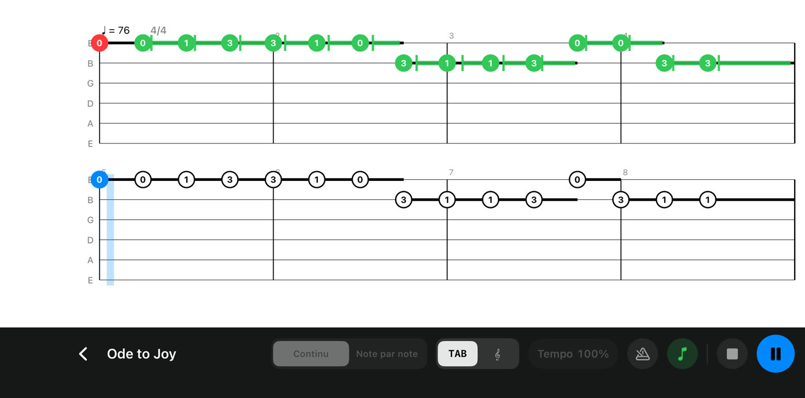
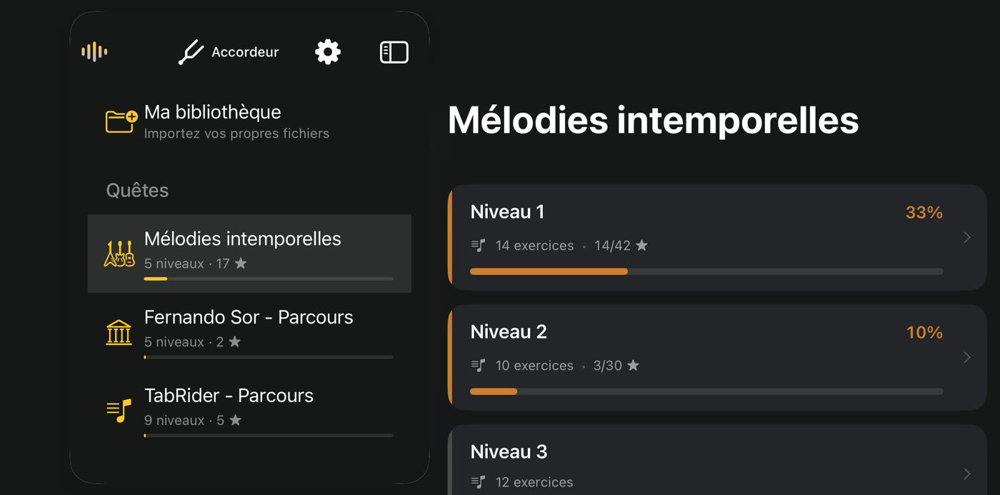
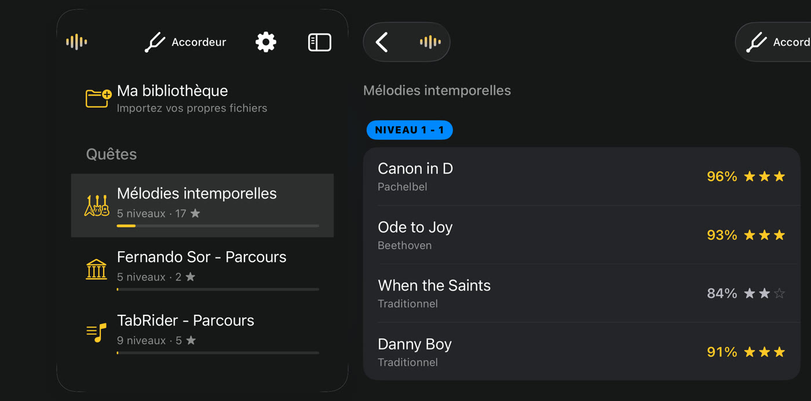
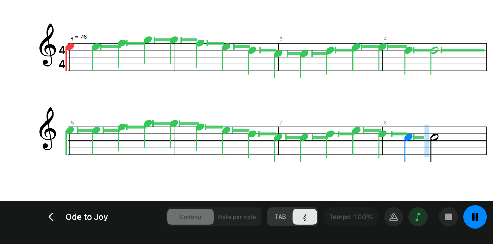
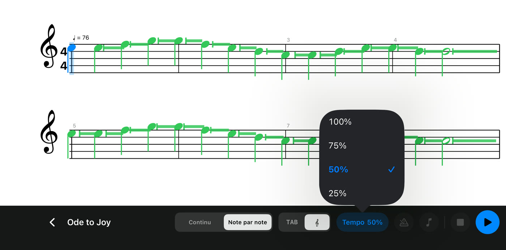
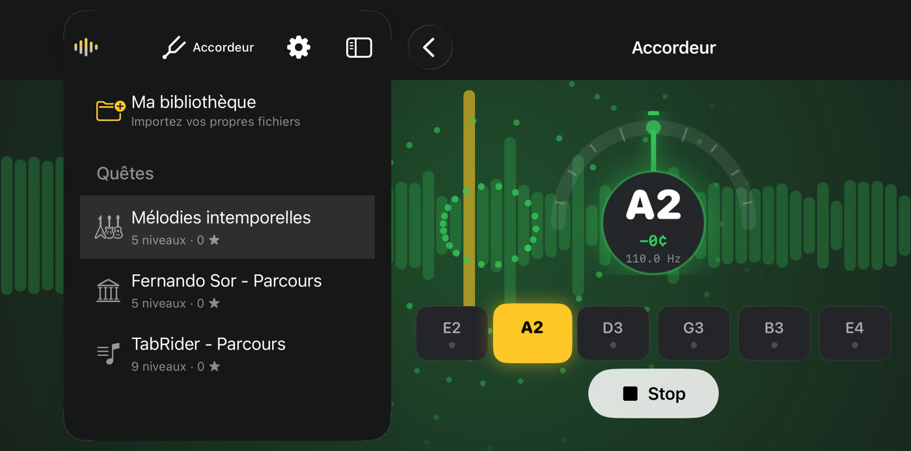

TabRider
TabRiderJouez.
TabRider vous écoute.
Prenez votre guitare et jouez. TabRider entend chaque note grâce à votre téléphone ou votre tablette, suit la partition avec vous et débloque de nouveaux morceaux à mesure que vous progressez.

Comment ça marche

ÉTAPE 1
Choisissez un morceau
361 exercices en trois quêtes : des mélodies intemporelles comme la Lettre à Élise, Greensleeves et Danny Boy, les études classiques de Fernando Sor, et un parcours progressif de gammes, d’accords, d’arpèges, de fingerpicking, de rythmique et de solo.
ÉTAPE 2
Jouez devant le micro
Ni câble, ni réglage. Jouez de votre guitare acoustique ou classique près de votre iPhone ou iPad. La partition défile avec vous et chaque note devient verte dès que TabRider l’entend.

ÉTAPE 3
Gagnez des étoiles, avancez
Chaque passage est noté sur la justesse de la note, le placement rythmique et la tenue. Les étoiles débloquent la rangée suivante : il y a toujours quelque chose de nouveau à jouer.
Tout pour bien travailler

Tablature ou partition
Lisez la tablature ou la partition, et passez de l’une à l’autre à tout moment.

Ralentissez
En mode Entraînement, rien n’est noté. Descendez le tempo jusqu’à 25 %, ou laissez le mode Note par note vous attendre à chaque note.

Un accordeur intégré
Accordez chaque corde en quelques secondes avant de jouer.
- Votre propre musique. Importez des fichiers Guitar Pro 6 (.gpx) dans Ma bibliothèque.
- Métronome. Un décompte et un clic régulier pour rester dans le temps.
- Confidentiel. Le son est analysé sur votre appareil, jamais enregistré ni envoyé.
- Gratuit. Sans compte, sans publicité, sans achat intégré, et fonctionne hors ligne.
Votre guitare. Votre rythme.
Pour iPhone et iPad (iOS 17 ou ultérieur). La version Android arrive bientôt.
Gratuit sur l’App Store